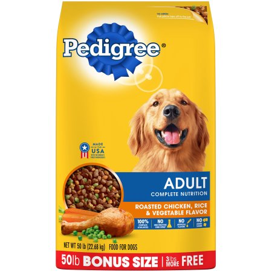

Dog Apparel
Top of the line leash-This leash is perfect for all pooches. It is long and can handle all different types of weather. In addition, it is extremely portable.

Dog Sweater-This sweater is perfect for pooches in the seacoast area. It keeps your friend warm when the seasons start to change.

Ball O' Steel-This tennis ball is extremely hardy. Perfect for canines with sharp teeth. This ball comes with a lifetime warranty.

Veggie Bone-This dog bone is made of vegetables! It is much better for the environment and is infused with lab manufactured animal proteins.
Dog Food
For Aging Canines-This food is perfect for an elderly pup! Keeps your older dog nice and strong.

For Younger Canines-This food is perfect for any young pup! Keeps your younger pup happy and healthy.